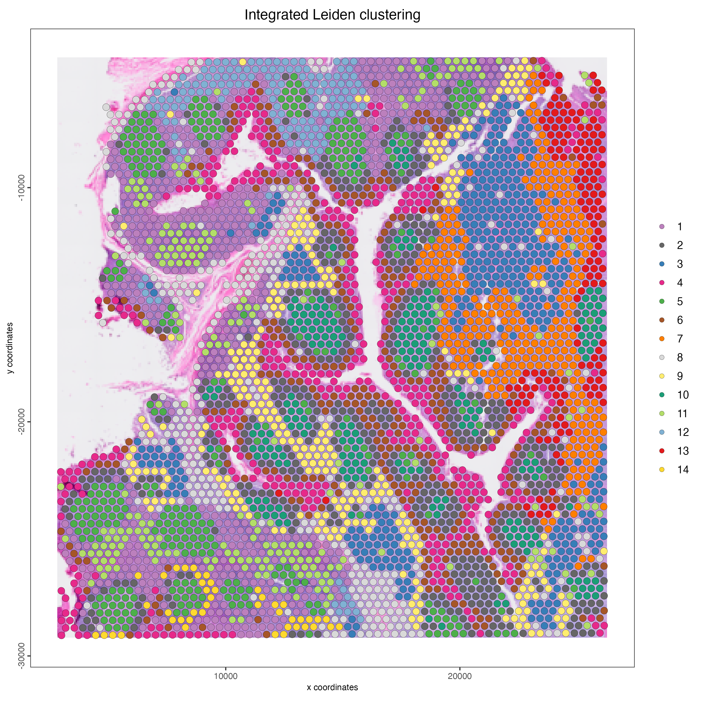

63 Multi-omics integration
Joselyn Cristina Chávez Fuentes
August 7th 2024
63.1 Introduction to the spatial dataset
The Human glioblastoma (FFPE) dataset was obtained from 10X Genomics. The tissue was sectioned as described in visium_glioblastoma CytAssist Spatial Gene Expression for FFPE – Tissue Preparation Guide Demonstrated Protocol (CG000518). 5 µm tissue sections were placed on Superfrost glass slides, then IF stained following deparaffinization, then hard coverslipped. Sections were imaged, decoverslipped, followed by Demonstrated Protocol (CG000494).
More information about this dataset can be found here.
63.2 Download dataset
You need to download the expression matrix and spatial information by running these commands:
dir.create("data")
download.file(url = "https://cf.10xgenomics.com/samples/spatial-exp/2.1.0/CytAssist_FFPE_Protein_Expression_Human_Glioblastoma/CytAssist_FFPE_Protein_Expression_Human_Glioblastoma_raw_feature_bc_matrix.tar.gz",
destfile = "data/CytAssist_FFPE_Protein_Expression_Human_Glioblastoma_raw_feature_bc_matrix.tar.gz")
download.file(url = "https://cf.10xgenomics.com/samples/spatial-exp/2.1.0/CytAssist_FFPE_Protein_Expression_Human_Glioblastoma/CytAssist_FFPE_Protein_Expression_Human_Glioblastoma_spatial.tar.gz",
destfile = "data/CytAssist_FFPE_Protein_Expression_Human_Glioblastoma_spatial.tar.gz")After downloading, unzip the gz files. You should get the “raw_feature_bc_matrix” and “spatial” folders inside “data/”.
63.3 Create the Giotto object
The minimum requirements are:
- matrix with expression information (or the path to)
- x,y(,z) coordinates for cells or spots (or the path to)
createGiottoVisiumObject() will automatically detect both RNA and Protein modalities in the expression matrix and will create a multi-omics Giotto object.
library(Giotto)
## Set instructions
results_folder <- "results/"
python_path <- NULL
instructions <- createGiottoInstructions(
save_dir = results_folder,
save_plot = TRUE,
show_plot = FALSE,
return_plot = FALSE,
python_path = python_path
)
# Provide the path to the visium_glioblastoma folder
data_path <- "data"
# Create object directly from the visium_glioblastoma folder
visium_glioblastoma <- createGiottoVisiumObject(
visium_dir = data_path,
expr_data = "raw",
png_name = "tissue_lowres_image.png",
gene_column_index = 2,
instructions = instructions
)- Print the information of the object, note that both rna and protein are listed in the expression slot
63.4 Subset on spots that were covered by tissue
spatPlot2D(
gobject = visium_glioblastoma,
cell_color = "in_tissue",
point_size = 2,
cell_color_code = c("0" = "lightgrey", "1" = "blue"),
show_image = TRUE,
image_name = "image"
)
63.5 RNA processing
- Filtering, normalization, and statistics
visium_glioblastoma <- filterGiotto(
gobject = visium_glioblastoma,
expression_threshold = 1,
feat_det_in_min_cells = 50,
min_det_feats_per_cell = 1000,
expression_values = "raw",
verbose = TRUE)
visium_glioblastoma <- normalizeGiotto(gobject = visium_glioblastoma,
scalefactor = 6000,
verbose = TRUE)
visium_glioblastoma <- addStatistics(gobject = visium_glioblastoma)- Dimension reduction
visium_glioblastoma <- calculateHVF(gobject = visium_glioblastoma)
visium_glioblastoma <- runPCA(gobject = visium_glioblastoma)- Clustering
visium_glioblastoma <- runUMAP(visium_glioblastoma,
dimensions_to_use = 1:10)
visium_glioblastoma <- createNearestNetwork(gobject = visium_glioblastoma,
dimensions_to_use = 1:10,
k = 30)
visium_glioblastoma <- doLeidenCluster(gobject = visium_glioblastoma,
resolution = 1,
n_iterations = 1000)- Visualization
plotUMAP(gobject = visium_glioblastoma,
cell_color = "leiden_clus",
show_NN_network = TRUE,
point_size = 2)
spatPlot2D(gobject = visium_glioblastoma,
show_image = FALSE,
cell_color = "leiden_clus",
point_size = 2)
63.6 Protein processing
- Filtering, normalization, and statistics
visium_glioblastoma <- filterGiotto(gobject = visium_glioblastoma,
spat_unit = "cell",
feat_type = "protein",
expression_threshold = 1,
feat_det_in_min_cells = 50,
min_det_feats_per_cell = 1,
expression_values = "raw",
verbose = TRUE)
visium_glioblastoma <- normalizeGiotto(gobject = visium_glioblastoma,
spat_unit = "cell",
feat_type = "protein",
scalefactor = 6000,
verbose = TRUE)
visium_glioblastoma <- addStatistics(gobject = visium_glioblastoma,
spat_unit = "cell",
feat_type = "protein")- Dimension reduction
visium_glioblastoma <- runPCA(gobject = visium_glioblastoma,
spat_unit = "cell",
feat_type = "protein")- Clustering
visium_glioblastoma <- runUMAP(visium_glioblastoma,
spat_unit = "cell",
feat_type = "protein",
dimensions_to_use = 1:10)
visium_glioblastoma <- createNearestNetwork(gobject = visium_glioblastoma,
spat_unit = "cell",
feat_type = "protein",
dimensions_to_use = 1:10,
k = 30)
visium_glioblastoma <- doLeidenCluster(gobject = visium_glioblastoma,
spat_unit = "cell",
feat_type = "protein",
resolution = 1,
n_iterations = 1000)- Visualization
plotUMAP(gobject = visium_glioblastoma,
spat_unit = "cell",
feat_type = "protein",
cell_color = "leiden_clus",
show_NN_network = TRUE,
point_size = 2)
spatPlot2D(gobject = visium_glioblastoma,
spat_unit = "cell",
feat_type = "protein",
show_image = FALSE,
cell_color = "leiden_clus",
point_size = 2)
63.7 Multi-omics integration
- Calculate kNN
## RNA modality
visium_glioblastoma <- createNearestNetwork(gobject = visium_glioblastoma,
type = "kNN",
dimensions_to_use = 1:10,
k = 20)
## Protein modality
visium_glioblastoma <- createNearestNetwork(gobject = visium_glioblastoma,
spat_unit = "cell",
feat_type = "protein",
type = "kNN",
dimensions_to_use = 1:10,
k = 20)- Run WNN
visium_glioblastoma <- runWNN(visium_glioblastoma,
spat_unit = "cell",
modality_1 = "rna",
modality_2 = "protein",
pca_name_modality_1 = "pca",
pca_name_modality_2 = "protein.pca",
k = 20,
integrated_feat_type = NULL,
matrix_result_name = NULL,
w_name_modality_1 = NULL,
w_name_modality_2 = NULL,
verbose = TRUE)- Run Integrated umap
visium_glioblastoma <- runIntegratedUMAP(visium_glioblastoma,
modality1 = "rna",
modality2 = "protein",
spread = 5,
min_dist = 0.5,
force = FALSE)- Calculate integrated clusters
visium_glioblastoma <- doLeidenCluster(gobject = visium_glioblastoma,
spat_unit = "cell",
feat_type = "rna",
nn_network_to_use = "kNN",
network_name = "integrated_kNN",
name = "integrated_leiden_clus",
resolution = 1)- Visualize the integrated umap
plotUMAP(gobject = visium_glioblastoma,
spat_unit = "cell",
feat_type = "rna",
cell_color = "integrated_leiden_clus",
dim_reduction_name = "integrated.umap",
point_size = 1.5,
title = "Integrated UMAP using Integrated Leiden clusters",
axis_title = 12,
axis_text = 10 )
- Visualize spatial plot with integrated clusters
spatPlot2D(visium_glioblastoma,
spat_unit = "cell",
feat_type = "rna",
cell_color = "integrated_leiden_clus",
point_size = 2,
show_image = FALSE,
title = "Integrated Leiden clustering")
63.8 Session info
R version 4.4.1 (2024-06-14)
Platform: aarch64-apple-darwin20
Running under: macOS Sonoma 14.5
Matrix products: default
BLAS: /System/Library/Frameworks/Accelerate.framework/Versions/A/Frameworks/vecLib.framework/Versions/A/libBLAS.dylib
LAPACK: /Library/Frameworks/R.framework/Versions/4.4-arm64/Resources/lib/libRlapack.dylib; LAPACK version 3.12.0
locale:
[1] en_US.UTF-8/en_US.UTF-8/en_US.UTF-8/C/en_US.UTF-8/en_US.UTF-8
time zone: America/New_York
tzcode source: internal
attached base packages:
[1] stats graphics grDevices utils datasets methods base
other attached packages:
[1] Giotto_4.0.8 GiottoClass_0.3.1
loaded via a namespace (and not attached):
[1] colorRamp2_0.1.0 deldir_2.0-4 rlang_1.1.4
[4] magrittr_2.0.3 RcppAnnoy_0.0.22 GiottoUtils_0.1.8
[7] matrixStats_1.3.0 compiler_4.4.1 png_0.1-8
[10] systemfonts_1.1.0 vctrs_0.6.5 reshape2_1.4.4
[13] stringr_1.5.1 pkgconfig_2.0.3 crayon_1.5.3
[16] fastmap_1.2.0 backports_1.5.0 magick_2.8.4
[19] XVector_0.44.0 labeling_0.4.3 utf8_1.2.4
[22] rmarkdown_2.27 ragg_1.3.2 purrr_1.0.2
[25] xfun_0.46 zlibbioc_1.50.0 beachmat_2.20.0
[28] jsonlite_1.8.8 DelayedArray_0.30.1 BiocParallel_1.38.0
[31] terra_1.7-78 irlba_2.3.5.1 parallel_4.4.1
[34] R6_2.5.1 stringi_1.8.4 RColorBrewer_1.1-3
[37] reticulate_1.38.0 parallelly_1.37.1 scattermore_1.2
[40] Rcpp_1.0.13 bookdown_0.40 knitr_1.48
[43] future.apply_1.11.2 R.utils_2.12.3 IRanges_2.38.1
[46] Matrix_1.7-0 igraph_2.0.3 tidyselect_1.2.1
[49] rstudioapi_0.16.0 abind_1.4-5 yaml_2.3.9
[52] codetools_0.2-20 listenv_0.9.1 lattice_0.22-6
[55] tibble_3.2.1 plyr_1.8.9 withr_3.0.0
[58] evaluate_0.24.0 future_1.33.2 pillar_1.9.0
[61] MatrixGenerics_1.16.0 checkmate_2.3.1 stats4_4.4.1
[64] plotly_4.10.4 generics_0.1.3 dbscan_1.2-0
[67] sp_2.1-4 S4Vectors_0.42.1 ggplot2_3.5.1
[70] munsell_0.5.1 scales_1.3.0 gtools_3.9.5
[73] globals_0.16.3 glue_1.7.0 lazyeval_0.2.2
[76] tools_4.4.1 GiottoVisuals_0.2.3 data.table_1.15.4
[79] ScaledMatrix_1.12.0 cowplot_1.1.3 grid_4.4.1
[82] tidyr_1.3.1 colorspace_2.1-0 BiocSingular_1.20.0
[85] cli_3.6.3 rsvd_1.0.5 textshaping_0.4.0
[88] fansi_1.0.6 S4Arrays_1.4.1 viridisLite_0.4.2
[91] dplyr_1.1.4 uwot_0.2.2 gtable_0.3.5
[94] R.methodsS3_1.8.2 digest_0.6.36 BiocGenerics_0.50.0
[97] SparseArray_1.4.8 ggrepel_0.9.5 htmlwidgets_1.6.4
[100] farver_2.1.2 htmltools_0.5.8.1 R.oo_1.26.0
[103] lifecycle_1.0.4 httr_1.4.7